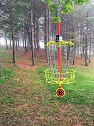

What is not to love about folf or otherwise known as "frisbee golf"! This activity allows you to go out and get exercise in the ways of throwing, hiking, trail running, and much more. This activity allows to go out and explore everything that the great outdoors has to offer, especially in the fall with the fall foliage as your playground and hiking as your means of seeing the differing terrain of every course, whether that involves a city course in a beautiful park or a backwoods journey through a course that couldn't be shown in anyone's wildest dreams. The competition level never falters as well once your group of friends gets really invested in what can only be described as a grueling sport. The best aspect of this sport is that you it does not require anything other than a frisbee disk and either baskets, hanging pins, or just targets you can designate yourself in a completely remote location that allows you to make the game whatever you want whether. What are you waiting for? Go get your disk and make it your own!